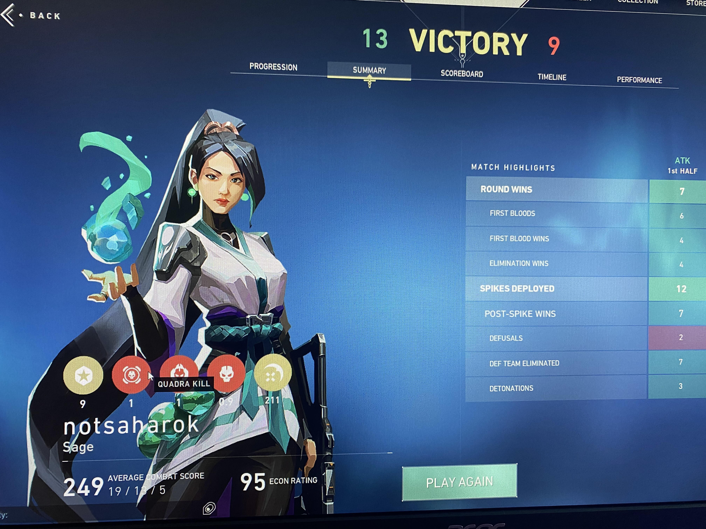
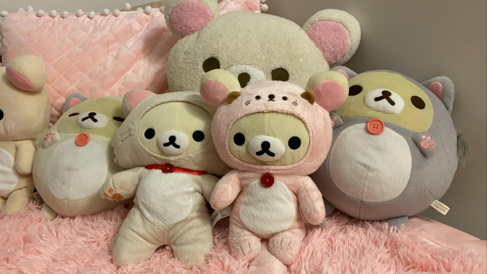
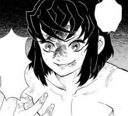
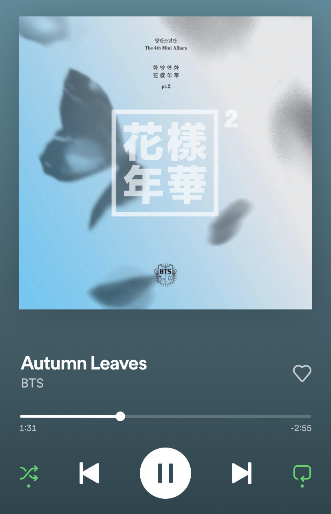

Gaming
｡ﾟ•┈୨♡୧┈• ｡ﾟ
I recently finished building my PC in the summer and was able to set it up and start doing things on it. I play mostly Stardew Valley, Valorant, Minecraft, and Roblox. I recently tried out Halo and found it cool too.
Collecting
｡ﾟ•┈୨♡୧┈• ｡ﾟ
I have loved cute things ever since I was a kid. I liked anything sparkly, pink, or anything with a bear or cat on it. I started collecting plushies since I was about 12. I like a lot of different brands like BT21, Sanrio, and San-x. My current favorite plushies to collect are the San-x Korilakkuma plushies. Korilakkuma is a white bear cub with a red button on his chest. I specifically like collecting Korilakkumas dressed up as other animals like otters or cats.
Anime
｡ﾟ•┈୨♡୧┈• ｡ﾟ
I have been watching anime since I was 10 or 11. I started out with animes like Sword Art Online and Fairy Tail which include a lot of adventure and fighting. I then started watching romance animes like Say I Love You and Kimi ni Todoke. Some of my favorite animes so far are Parasyte, Hunter X Hunter, Inuyasha, Attack on Titan, and Demon Slayer.
Music
｡ﾟ•┈୨♡୧┈• ｡ﾟ
I started developing my music taste when I was around 8 or 9 starting out with Katy Perry. When I was 12, I discovered BTS and Seventeen which are two K-pop groups. I then started branching out more to J-pop, J-rock, Krnb, and Indie. This year I started listening to a lot more reggaeton and rap since a lot of my friends started recommending things to me. My favorite artists at the moment are DEAN, Bad Bunny, Playboi Carti, Yeat, BTS, Ive, I*zone, and Seventeen.